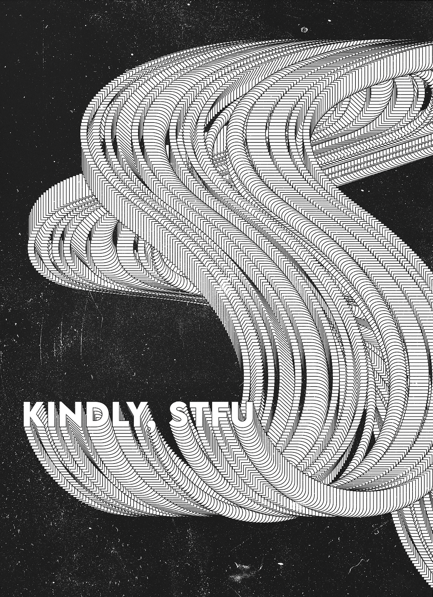
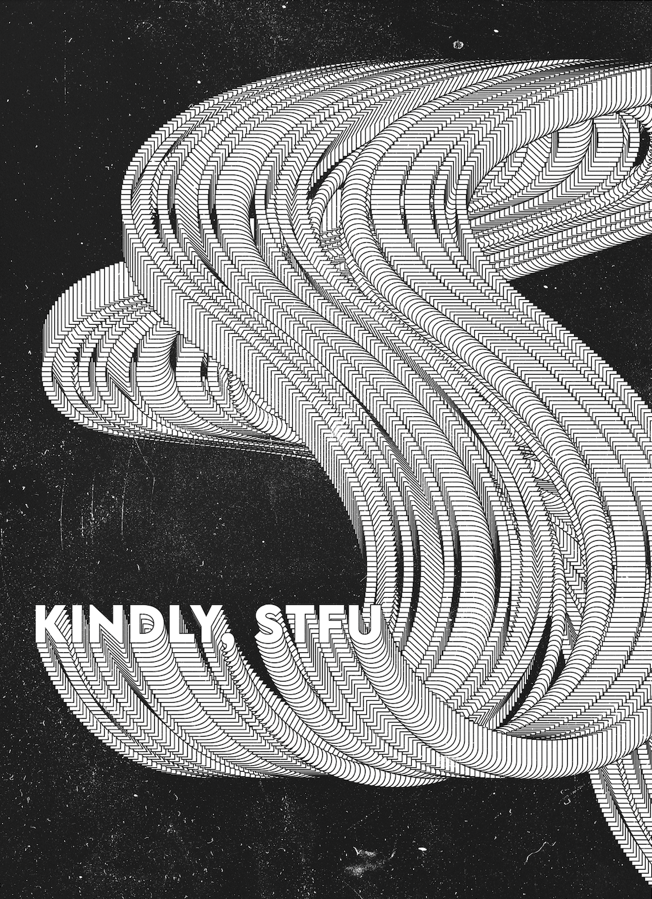

Here are some things that I have created!

I chose a theme and a color scheme, and then took photographs of various beauty products. Then I strategically put them together in Adobe In Design. My vision for the final composition was to display bright colors and crisp letters together in a way that made sense.

This was a poster I created last fall semester in my tpoygraphy class. It was to advertise a concert (that wasn't real!) at IU.

This is a charcoal drawing of a palm that I drew in a class called Simulation & Reality.
 

I am from Long Island, New York.
Here are some photos that I have taken near my home town this summer.

This is a photo I took after a day at the beach.
This was what the sunset looked like one night on my way home from dinner.

This is what I saw on my way to NYC.

This was a few weekends ago when I went to a New York Mets game! My family and I are big mets fans.
Here are a few of my friends and I on a night out this summer.

To end my presentation here are my cute dogs.
Below is the link to my google drive folder that contains the materials I used for this project. They are in the folder labeled Project 1 Augmented Reality.
https://drive.google.com/drive/folders/1pQYeWEruLNSpAjgGVh3b1y8qmPmtZFIN?usp=sharing
Also, here are the links to the sites I used for my research on Hoagy. The information included underneath my photos in my project came from here.
https://publichistory.iupui.edu/tours/show/42
https://publichistory.iupui.edu/tours/show/42
https://www.wfyi.org/news/articles/hoagy-carmichaels-legacy-100-years-after-his-birth-in-bloomington
Below is the link to my google drive folder that contains the materials I used for this project. It is in the folder labeled Project 2 P5.
https://drive.google.com/drive/folders/1pQYeWEruLNSpAjgGVh3b1y8qmPmtZFIN?usp=sharing
Also, here is the link to the sound I used in my project. It was from a youtube video that I converted and downloaded.
https://www.youtube.com/watch?v=P3L4lGo5QZ4
This is my physical project. If you click on vecna within the collage you will hear his signature clock sound that plays throughout the show. P5 decided to make it sound a bit wonky, but I think that it adds an additional funky aspect/effect to my project!
Below is a link to the youtube video that I followed along with in order to help me make my final project.
https://www.youtube.com/watch?v=uk96O7N1Yo0